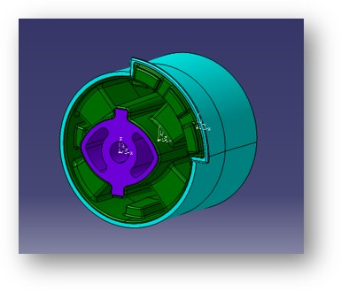
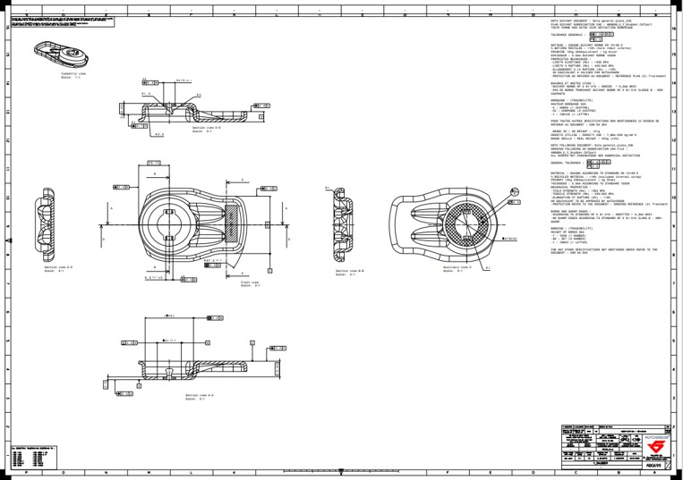
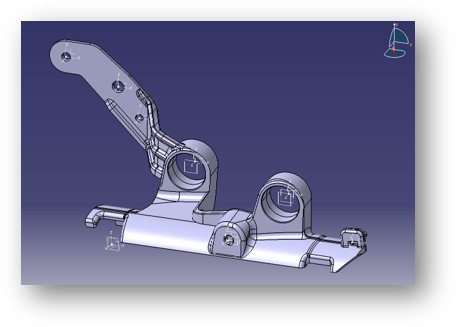

Modélisation 3D d’un silentbloc
Modélisation d’un silentbloc en CAO : prise en compte de la géométrie caoutchouc/métal,
des zones de surmoulage et des interfaces avec le châssis. Cette étape permet de préparer
les futures simulations et la mise en plan.

Optimisation de la géométrie
Ajustement de la géométrie pour répondre au cahier des charges client : encombrement,
interfaces, zones de fixation. Le modèle 3D sert de base aux échanges avec les
concepteurs et aux validations internes.

Cotation de plans
Mise en plan et cotation fonctionnelle suivant les spécifications du client
: dimensions clés, référentiels, tolérances géométriques.
L’objectif est d’assurer la bonne fonction de la pièce et la maîtrise de la fabrication.

Conception de supports spécifiques
Modélisation 3D de supports dédiés (ici un support d’extincteur) pour des besoins
internes ou clients. Ce travail mêle contraintes fonctionnelles, ergonomie
et possibilités industrielles.